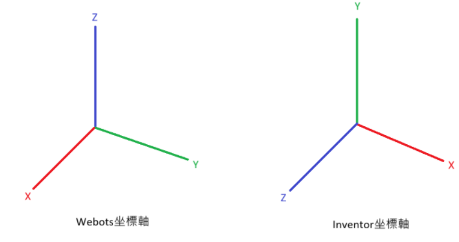

cad2025_hw
Home
SMap
reveal
blog
About
練習
Tutorial1
Tutorial2
Tutorial3
Tutorial4
Tutorial5
Tutorial6
Tutorial7
練習檔
Webots模擬
成品
模擬筆記
成品 <<
Previous
模擬筆記
匯入到 Webots 前，確保 CAD 模型的長度單位為「m」或於匯出時把所有座標縮放 0.001（mm → m）。若忽略，Webots 會把 mm 數值當成 m 讀取，導致幾何放大 1000 倍。
Inventor更改單位方法 工具>文件設定>單位>公釐改公尺
在 Inventor 中，Y 軸為垂直向上（Y-up）；
在 Webots 中，Z 軸為垂直向上（Z-up），若直接匯出模型不做旋轉，零件會躺平。
解法：在建立模型時按照Webots的座標軸。(或在 Webots
Transform.rotation
設定）。

在使用Webots時，把座標系統開啟 View>Optional Rendering>Show Coordinate System。
練習Webots時可到
官方網站
查看每個功能，也可以
點這裡
查看詳細的中文教學影片。
成品 <<
Previous
Copyright © All rights reserved | This template is made with
by
Colorlib